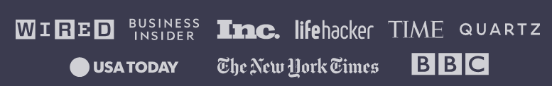

Since 2014, more than 40,000 freeCodeCamp.org graduates have gotten jobs at tech companies including:
freeCodeCamp students at a local study group in South Korea.
As seen in:

Here is what our alumni say about freeCodeCamp:
Shawn Wang in Singapore
Software Engineer at Amazon
"It's scary to change careers. I only gained confidence that I could code by working through the hundreds of hours of free lessons on freeCodeCamp. Within a year I had a six-figure job as a Software Engineer. freeCodeCamp changed my life."
Sarah Chima in Nigeria
Software Engineer at ChatDesk
"freeCodeCamp was the gateway to my career as a software developer. The well-structured curriculum took my coding knowledge from a total beginner level to a very confident level. It was everything I needed to land my first dev job at an amazing company."
Emma Bostian in Sweden
Software Engineer at Spotify
"I've always struggled with learning JavaScript. I've taken many courses but freeCodeCamp's course was the one which stuck. Studying JavaScript as well as data structures and algorithms on freeCodeCamp gave me the skills and confidence I needed to land my dream job as a software engineer at Spotify."
Earn free verified certifications with freeCodeCamp's core curriculum: